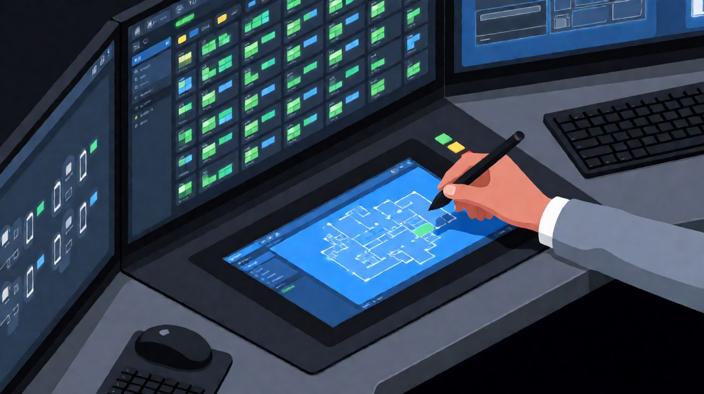

有幸出席2026年度万讯产品技术交流培训会。作为万讯江西区域技术负责人，负责本地相关对接工作，和各位同仁一同学习与交流WISE智慧教学空间物联网运维体系。
IOP物联平台底座：一体化管控

万讯的IOP物联网智慧教学融合平台，不是简单的设备管理软件。它是一个底座——中控、交互屏、音视频、巡课设备全部纳管到一个平台。
教室里不同厂家的设备，协议再杂，IOP都能统一接管。平台提供11大核心功能模块：IOP物联管控、ACS自动巡检、OCE教学评估、CRP教室上座率、TSR教室预约、OMS运维管理、STC督导巡课、AVS音视频广播、DBA数据大屏、BDS楼宇大屏、教学互动。覆盖教学全场景。
依托IOP物联平台底座，实现设备统一管控、身份鉴权、人机交互。管理者通过一个平台就能看到所有教室的运行状态，不用再跑遍每间教室逐台检查。
产品迭代方向：物联网自动巡检+AI智能体自主运维
这次培训重点研讨了两个产品迭代方向。
第一个是物联网自动巡检。ACS自动巡检模块的定位是AI自动检测设备、主动预警、自动出巡检报告。这解决的是当前巡检依赖人工逐台刷新的效率瓶颈。20间教室靠App逐台刷，速度慢，发现问题时教学已经受影响。自动巡检做到7×24小时不间断检测，设备异常提前预警，不再等老师报修才发现问题。
第二个是AI智能体自主运维。从"人管设备"走向"系统管设备"——故障自动发现、自动告警、自动派单、自动处置、自动复盘。OMS运维管理模块已有智能工单和语音报修基础，AI智能体的加入会让整个运维链路更加自动化。运维人员从被动抢修转向主动预检，甚至做到无人值守。
一线落地痛点与优化建议
作为区域技术负责人，我最大的价值是收集一线落地痛点带到会场。这次提了几个真实问题。
EDID配置不当导致HDMI输出先模糊后无信号。中控AV板负责信号切换，EDID预置与实际显示设备不匹配时就会出这个问题。当前9套预置EDID覆盖常见分辨率，但遇到非标显示器仍需手动读取。技术人员需要到场从读取口手动读取EDID，操作依赖经验，新手上手门槛高。建议IOP平台支持远程查看和修改EDID配置，减少到场次数。
教室中控自动下课异常。刷卡、扫码、WOO课表、权限控制器多链路叠加，单台排查需跨IOP平台到MMU面板到权限控制器到刷卡器多级溯源。故障源定位困难，一次排查可能耗时半天。建议增加下课事件溯源日志，一次点击看到触发源——是刷卡触发还是课表触发还是手动触发，一目了然。
巡课摄像头匹配错误。两间教室IP重复实际共用一台摄像头，人数统计必然出错。摄像头密码大小写不一致也会导致拉流失败。建议IOP增加IP重复检测和密码一致性校验，从系统层面杜绝配置错误。
持续打磨方案，助力校园信息化项目稳定落地
万讯专注教育29年，服务1200余所高校及中小学的万余间教室。在江西区域，我们正在密集推进多个校园信息化项目落地。一线需求旺盛，痛点也真实。
这次培训会的价值不只是学习产品知识，更重要的是把一线声音带到厂家。持续打磨方案、响应现场诉求，助力江西区域校园信息化项目稳定落地。
有问题找南序。
—— 文/南序先生｜辉旭为简工作室
官网：www.nanxu.vip | 邮箱：nanxu_hui@qq.com | 电话/微信：13576933022